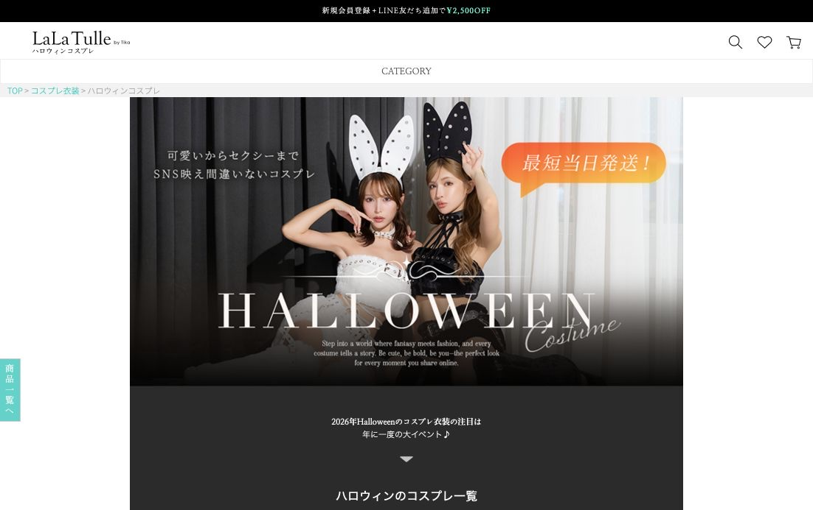
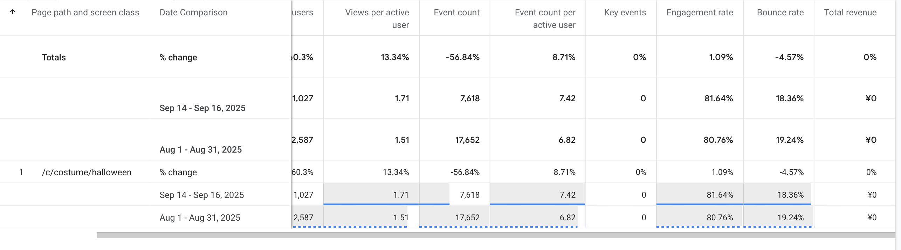
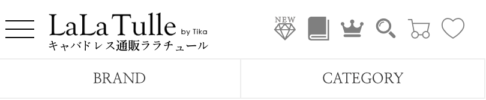

主要キーワードの検索順位が停滞。
Company UX Improvement
LaLaTulle
集客から購入まで、ページ単位で改善した。
Halloween PageのSEOと情報構造、Landing Pageの商品探索、PDPの購入判断を対象に、分析・設計・検証を行いました。

01 / Halloween Page · Why
検索順位、古い構造、長いスクロールを同時に見直す。
数年間、大きな構造変更がなく、主要キーワードの順位は7〜9位で停滞していました。ページは長い一方で下部までの到達率が低く、コスプレカテゴリの売上にも大きな増減がありませんでした。
数年間、コスプレカテゴリの売上に大きな変化がない。
前回改修はBannerと背景の変更が中心。
長いページに対して下部までのScroll Reachが低い。
GoalVisual refreshCVR hypothesisHTML / SEONew content

Research / Benchmark
競合調査から、今回の改修範囲を絞った。
Sugar、VanityME、Clearstone、BODYLINEを比較し、Halloween Pageの構造変更に直接関係する5つの観点を整理しました。
Mobile UI
SugarとVanityMEは、タッチ操作と画面幅に合わせて商品探索を整理。LaLaTulleはDesktop中心の長い構成が残っていました。
Category structure
競合はカテゴリの選択肢を短い導線で提示。LaLaTulleはカテゴリごとの商品が縦に続き、目的の商品までのScroll量が多い状態でした。
Content depth
商品一覧だけでなく、選び方やFAQを持つページがありました。検索意図に答える補助情報を下部に追加する判断につなげました。
Visual direction
LaLaTulleの高価格帯商品に対して、既存のカジュアルな表現が一致していませんでした。商品価値が伝わるVisualへ変更しました。
Page weight
画像とScriptが多い点を技術課題として分離。HTML構造と画像運用を見直し、Lighthouseで確認する方針にしました。
Scope decision
商品数、価格帯、App開発、SNS施策はページ改修だけでは解決できないため、今回の実装範囲から分離しました。
Decision / Execution
HTML、カテゴリ移動、下部コンテンツ、ビジュアルを再設計した。
見た目だけを更新せず、検索エンジンが読む構造とユーザーが移動する構造を同時に整理しました。
Heading hierarchy
同じ階層のカテゴリに混在していたh2・h3を整理。
Category tabs
縦に並んでいたカテゴリをTab切り替えに変更し、Scroll量を削減。
FAQ schema
FAQを追加し、FAQPageの構造化データを実装。
Internal links
下位カテゴリからHalloween Pageへ戻るリンクを追加。
Bottom contents
Recommend slider、簡単検索、Q&Aを下部に追加。
Visual direction
カジュアルなBannerを、商品単価に合う表現へ変更。

Risk / Decision
順位低下だけで戻さず、ページ内行動を併せて判断した。
構造変更後、9月10日頃に検索順位が約15位まで低下しました。SEO・広告担当者、店舗責任者と旧構造へ戻す案を議論し、ユーザー当たり指標が悪化していなかったため、1週間観察を続ける判断を提案しました。
Search positionLower is better
Before7〜9位9/10頃約15位9/15〜回復開始9/28〜10/1平均2位10月初旬7〜9位
Behavior Check / GA4
検索順位の変動中も、ユーザー当たり行動は悪化していなかった。
9月14〜16日と8月全体の比較です。期間の長さが異なるため総Users・総Event数は評価に使わず、ユーザー当たり指標とRateを方向性の確認に限定して使用しました。

HTMLと構造化データを再整備。
9/28〜10/1の主要キーワード。
Organic経由の購入が前年を上回った。
10月初旬は上部コンテンツ変更、商品削除、新商品の減少後に7〜9位へ変化しました。構造だけを成果要因として断定せず、コンテンツと商品状態も併せて記録しています。
Landing / Navigation
6つのメニューアイコンから3つに減らす。
上段は検索・お気に入り・カートに限定しました。新商品・ランキング・セールはロゴ下のNavigationへ移し、利用の少なかったBlogの独立アイコンは削除しました。
Before6 navigation icons

異なる目的の6項目が同じ階層に並んでいました。
After3 primary actions

日常的な操作と商品カテゴリを上下の階層に分けました。
Landing / First View
Saleを削除せず、First Viewでの優先度を下げた。
顧客は20代半ば〜30代半ばのプロのキャストが中心で、主力商品は20,000〜30,000円です。主力ブランドは値引き対象外で、Landing PageからSale Pageへの移動も少ない状態でした。
プロとして着用するDressを探す顧客。
中心となる商品価格帯。
Outletと一部Brandのみ値引き可能。
Mini・Long Dressカテゴリへの移動が多い。
Landing / Quick Search
下部でも使われていた簡単検索を、Main Carouselの直下へ移動した。
Heatmapで下部配置時にもClickが確認できました。Mini Dress、Long Dressなど商品カテゴリへの移動を増やすため、より発見しやすい位置へ変更しました。
BeforeMain carouselQuick Search
AfterMain carouselQuick SearchFeature / Blog
Landing / PDP · UT & AB Test
UTで購入判断を観察し、PDPの仮説をABテストした。
商品が直近24時間で一定回数以上閲覧された場合だけ、リアルタイム閲覧人数を表示しました。表示は10秒後に消し、常時購買を急かさない条件にしました。
- A: 購入促進UIなし
- B: 条件成立時のみ閲覧人数を表示
- Firebaseで表示条件を検証

PDP / Result & Trade-off
一部指標は改善したが、購入Flow全体の改善には至らなかった。
Cart追加率と購入率はわずかに上がりましたが、購入開始率は低下しました。局所的な効果とFirebaseの運用コストを比較し、テストを終了しました。
局所改善と全体成果を分ける
Cart追加だけで購入体験全体の成功と判断しない。
主要CV区間まで追う
購入開始と完了まで連続して評価する。
終了も設計判断にする
限定的な効果と運用コストを比較して継続しないと判断した。
一つの順位やCVだけで判断せず、検索流入、ページ内行動、購入Flowを分けて検証した。
Reflection / LaLaTulle